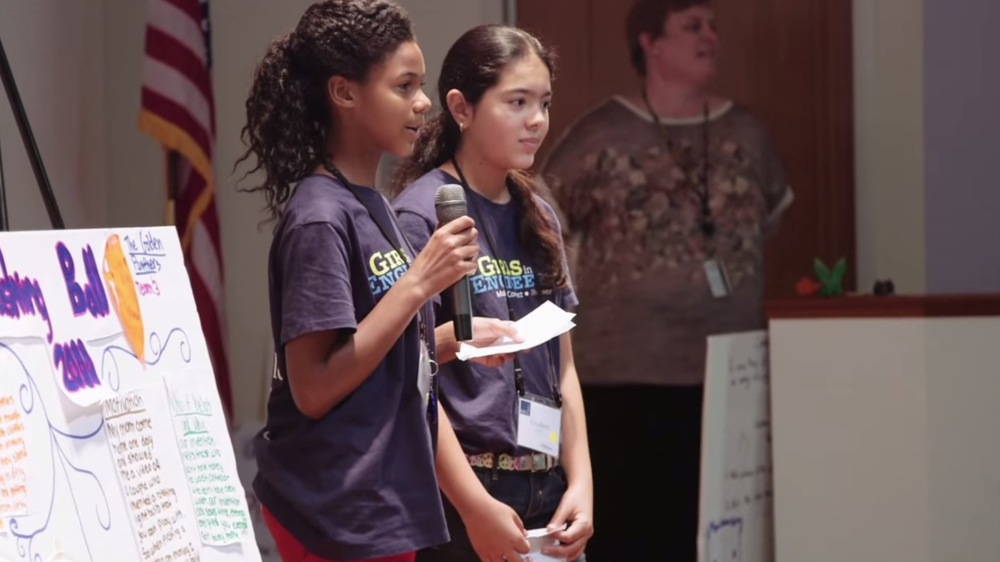
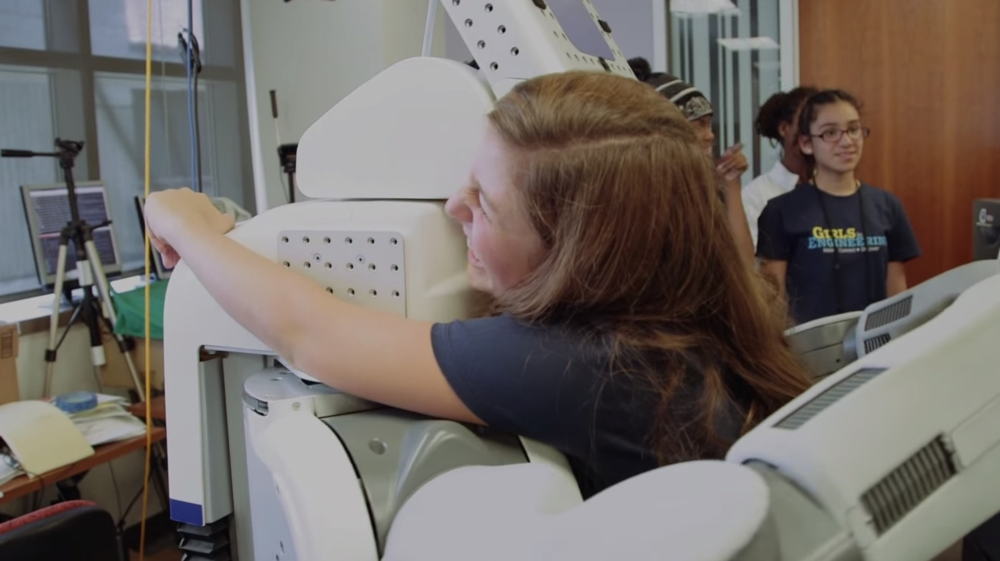

Make
Build "Squishy Circuits" - Construct Your Own Electric Origami Bug - Code on a Computer - Produce a 3-D Project

Discover
Explore the Lawrence Hall of Science - Go Behind the Scenes at Pixar Animation Studios - Cultivate Leadership Skills - Tour the UC Berkeley Robotics Labs

Connect
Make New Friends - Learn from Berkeley Scientists Who Are Changing the World - Meet Amazing Mentors Who Can Help You Succeed